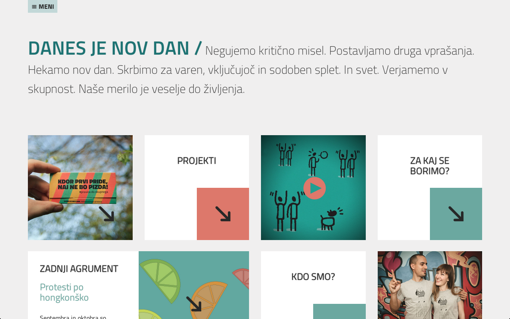

When do programmers work for free?
danesjenovdan.si 0.2

Today is a new day, institute for other questions

Et tu, Borute?

Druga vprašanja o dr. Cerarju

Work
- What makes a cave a home?
- What is (surplus) value?
Unpaid work in the 21st century
- companies vs. households
- Facebook
- Volunteerism
- Internships
- Precarious work
Work and pleasure
- Pleasure is that which has no purpose.
- Indolence?
- What happens, when pleasure is the goal?
- Jouissance
The science of motivation
In conclusion
- Πολιτικά
Programmers should never work for free.- Universal income